🛒 Product research • 2026-11-23 • Black Friday window • kursy przybliżone: 1 € = 11,3 kr, 1 $ = 10,5 kr, 1 zł = 2,65 kr • ~610 ofert, 20+ modeli, 14 platform/sklepów, 10+ źródeł recenzji • kontekst: panele motocyklowe MT-07, wymagana dokładność ≤1 mm
| Źródło | Status | Szczeble | Wynik |
|---|---|---|---|
| Blocket / Tradera / FB Marketplace (skrypty lokalne) | ✅ COVERED | — | ~68+8+66 ogłoszeń przesiewanych, sensownych ~20 (używane SE) |
| AliExpress (geo=SE) | ✅ COVERED | http→Lightpanda→Bright Data | 80 ofert; http i Lightpanda wpadły w punish — BD zadziałał |
| Allegro.pl | ✅ COVERED | curl_cffi→Bright Data→browser | 188 ofert po dedupe (DataDome ominął BD) |
| Amazon.se / .de | ✅ COVERED | Lightpanda(fail)→curl SSR→PDP | 61 ofert; .de tańszy, .se droży |
| eBay.de + Kleinanzeigen | ✅ COVERED | curl→web_fetch→Lightpanda→browser(4.) | 145 ofert używanych |
| 3DPrima (SE, Malmö) | ✅ COVERED | web_fetch | 24 skanery, Black Week, ceny EUR, free ship >100 € |
| 3DVerkstan (SE, Solna) | ✅ COVERED | web_fetch | 14 skanerów Shining 3D + AESUB spray 152,50 kr |
| Proshop.se | ✅ COVERED | browser+jina (Cloudflare) | 19 pozycji (15 Revopoint, 4 Creality), ceny SEK |
| 3DJake (AT/DE) | ✅ COVERED (brak asortymentu) | web_fetch×2 | 0 skanerów 3D marki docelowe — kategoria tylko „bq" |
| raseter.com | ✅ COVERED (nie istnieje) | DNS×7 | NXDOMAIN — domena wygasła |
| Oficjalne: Creality / Revopoint / 3DMakerpro / Shining3D | ✅ COVERED | curl products.json + browser | ~35 modeli + promo BF + warehouse EU + gwarancje |
| Recenzje niezależne | ✅ COVERED | web_fetch (blogi) + Reddit + YT | 10+ źródeł: 3DMag, 3DWithUs, 3DTechValley, Lidar News, TheTechnologyMan, TechWalls, Galaxus, 3DSourced, Reddit r/3DScanning, YT (Making for Motorsport 520K/268K, Hoffman 42K) |
| Hygglo (wynajem) | ✅ COVERED | sitemap 17 MB | 0 skanerów 3D w bazie; iPhone Pro od 890 kr/mies. |
| Usługi skanowania (kontekst) | ✅ COVERED | web_fetch | Innovar PL 299–750 zł netto; 3DVerkstan Studios wycena |
| AliExpress REST? (Temu/Banggood) | ➖ poza scope | — | BD-kwoty; na żądanie dobiję w v2 |
| Zdjęcie | Model | Dokładność | Najtaniej nowy | AliExpress | Używany od | Werdykt pod zadanie |
|---|---|---|---|---|---|---|
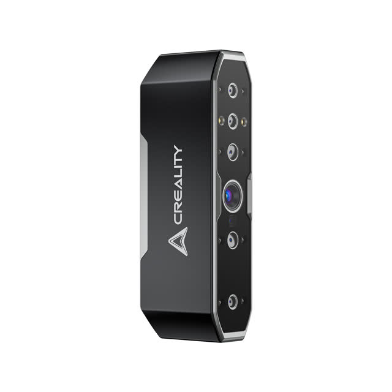 |
Creality CR-Scan Otter ✅ |
0,02 mm @60 mm | ≈6 090 kr — Allegro 2 299 zł | Ali od 8 732 kr | eBay: Otter Lite 427 € | 🥇 najlepszy all-round — testowany na karoseriach aut, markery w zestawie |
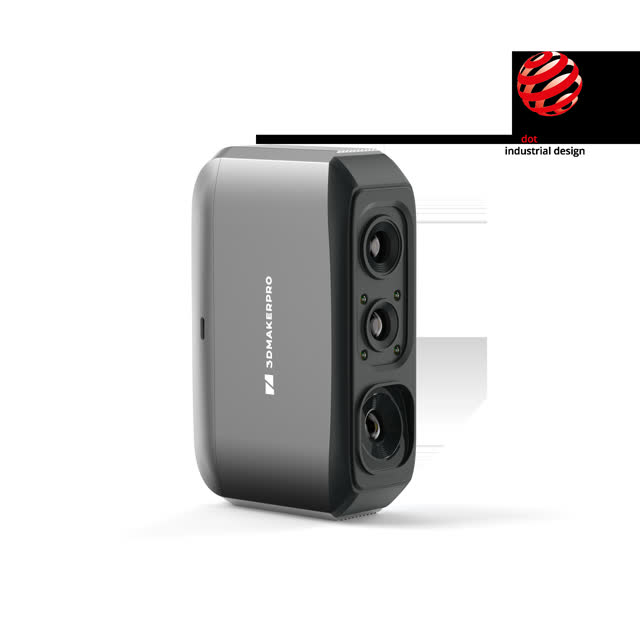 |
3DMakerpro Moose Lite ✅ |
0,05 mm | ≈3 150 kr — 3DPrima 279 € | Ali 2 922 kr (5★, 28 sold) | — | 💰 najtańszy „sprawdzony” — klasa Moose mierzona kalibrem 0,04 mm; brak trybu markerów |
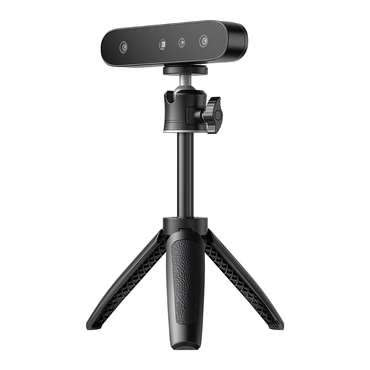 |
Creality CR-Scan Ferret SE ✅ |
0,1 mm | ≈2 250 kr — 3DPrima 199 € | Ali od 2 874 kr | Proshop.se 2 785 kr | 💵 absolutne minimum — Ferret-family tracking to jego słabość |
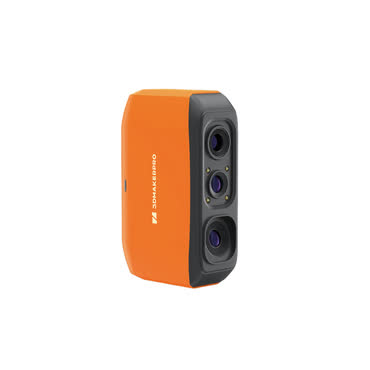 |
3DMakerpro Fox ⚠️ |
0,07 mm | ≈2 090 kr — oficjalnie $199 (DE) | Ali 2 255 kr (5★, 11 sold) | Allegro 920–931 zł | 🃏 wildcard — nowość 2025, AI SLAM tracking, 210 g; brak niezależnych recenzji |
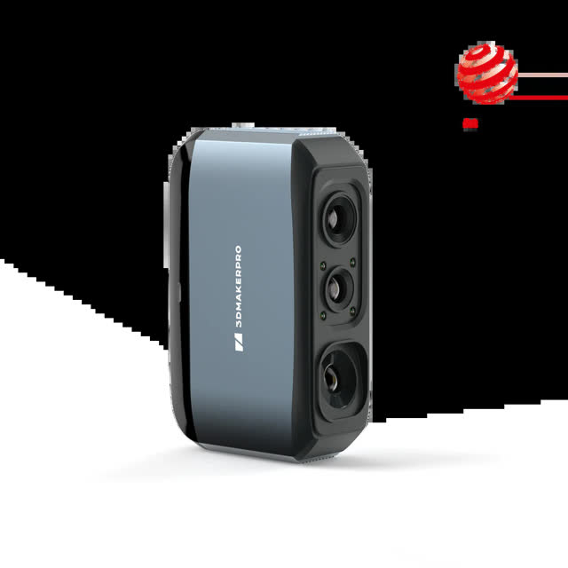 |
3DMakerpro Moose ✅ |
0,03 mm (zmierzone 0,04) | ≈4 400 kr — oficjalnie $419 | Ali 5 080–5 535 kr (4,9★, 298 sold) | 3DPrima 579 € | 🥈 pełna wersja: kolor + blue LED; najlepsza potwierdzona dokładność w klasie |
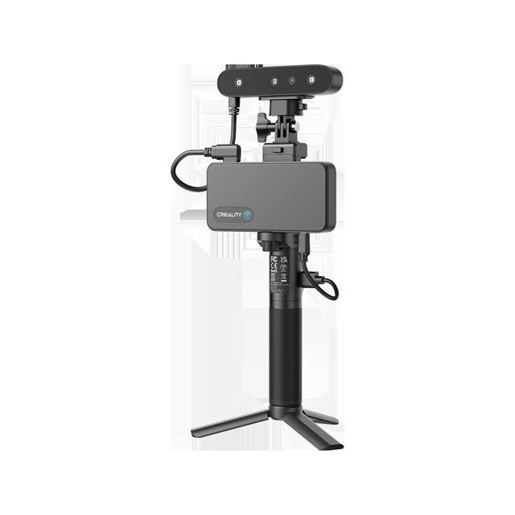 |
Creality CR-Scan Ferret Pro ✅ |
0,1 mm (bez warunków) | ≈3 710 kr — Allegro 1 399 zł | Ali od 3 691 kr (5★, 35) | eBay od 122 € ≈ 1 380 kr | ⚠️ najtańszy „Pro”, ale użytkownicy: tracking loteria; wired + spray + markery |
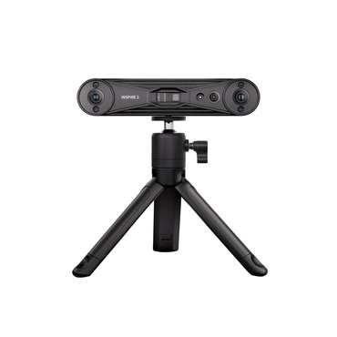 |
Revopoint INSPIRE 2 ⚠️ |
0,05 mm / laser | ≈4 030 kr — oficjalnie $384 | — | 3DPrima 405–468 € | laser IR radzi metallic bez sprayu; wymaga markerów w trybie laser |
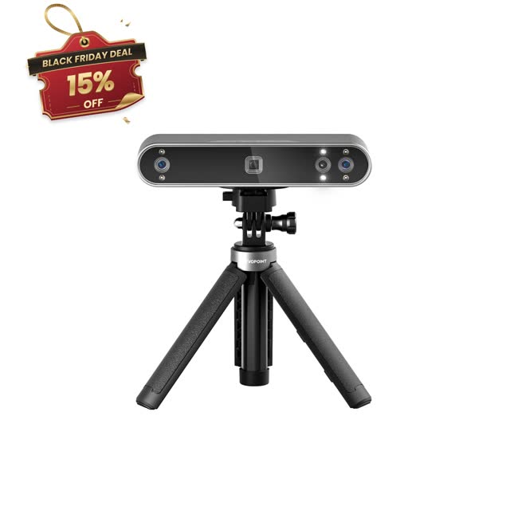 |
Revopoint POP 3 Plus ✅ |
0,08 mm (fused 0,05) | ≈6 700 kr — oficjalnie 593 € | — | eBay: POP 3 gen1 od 120 € | dojrzały Revo Scan; następca INSPIRE 2; zoom optyczny do detali |
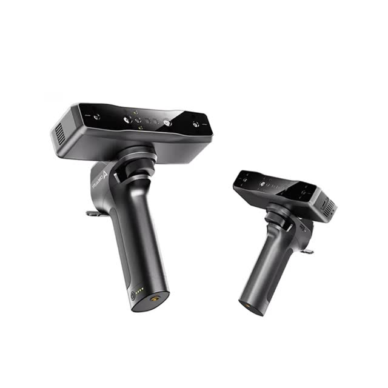 |
Creality Otter Lite ⚠️ |
0,05 mm | ≈5 075 kr — 3DPrima 449 € | Ali 8 967 kr | eBay 427 € ≈ 4 825 kr | budżetowa gałąź Ottera; wireless Wi-Fi 6 |
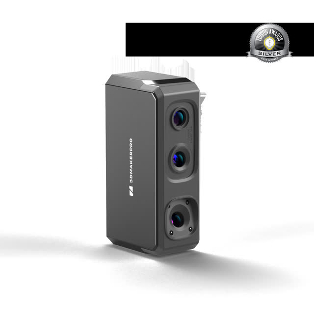 |
3DMakerpro Seal Lite ✅ |
0,02 mm | ≈2 260 kr — oficjalnie $215 | Ali 2 634 kr | 3DPrima 259 € | ❌ linia Seal: realne testy złe (niekompletne skany, brak watertight) |
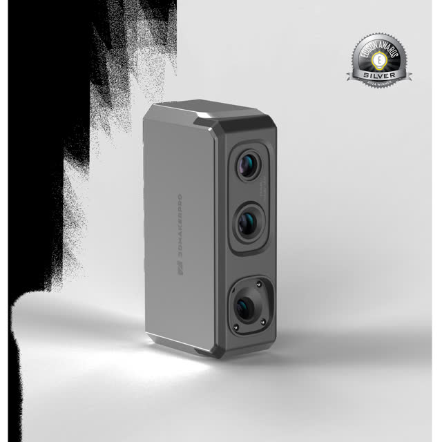 |
3DMakerpro Seal ✅ |
0,01 mm (claims) | ≈4 400 kr — oficjalnie $419 | — | 3DPrima 529 € | ❌ twarde NIE — TechWalls + Reddit: „too many flaws”, ciasne pole 100×75 mm |
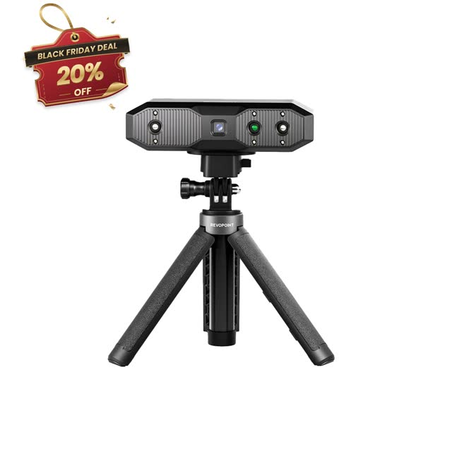 |
Revopoint MINI 2 ✅ |
0,02 mm (blue light) | ≈8 400 kr — oficjalnie 743 € | — | Proshop 9 091–10 310 kr; Blocket 5 000 kr | ❌ do panelu — za wąskie pole; świetny tylko do drobnych detali |
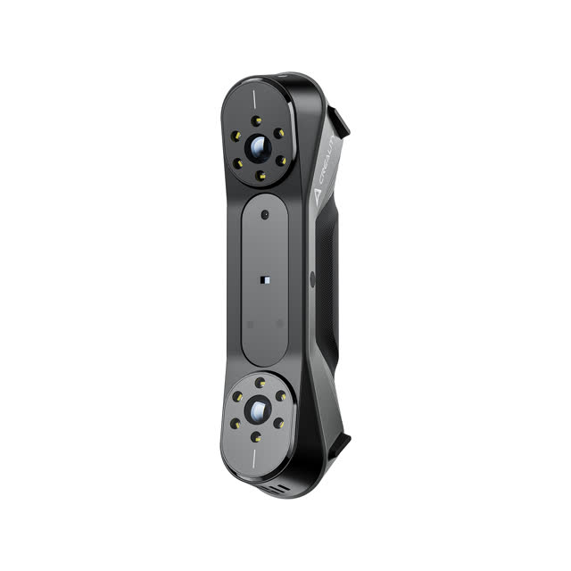 |
Creality CR-Scan Raptor ✅ |
0,02 mm laser | ≈10 840 kr — 3DPrima 959 € | — | Proshop 10 707 kr | metrologia; overkill przy 1 mm |
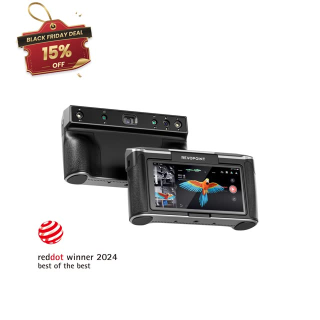 |
Revopoint MIRACO ✅ |
0,05 mm standalone | ≈16 100 kr — oficjalnie 1 428 € | — | FB MP: Miraco Pro 12 000 kr | standalone bez PC; overkill dla zadania |
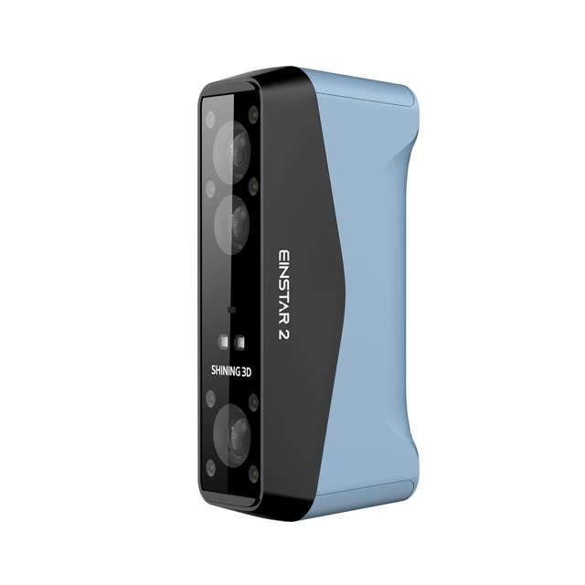 |
Shining 3D EINSTAR 2 ✅ |
laser HD 0,05 mm | ≈12 100 kr — 3DPrima 1 069 € | — | 3DVerkstan 13 188 kr | klasa pro; 3–5× budżetu bez korzyści przy 1 mm |
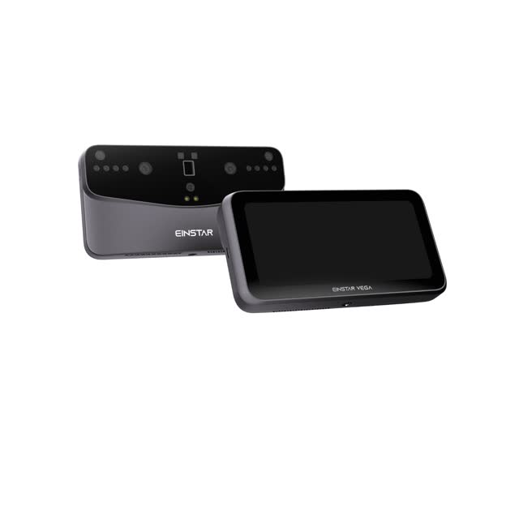 |
Shining 3D EINSTAR VEGA ✅ |
0,05 mm standalone | ≈17 900 kr — oficjalnie 1 799 € | — | eBay używana 850 € VB | standalone, ekran; nie dla tego zadania |
| 📷 | Shining 3D Einstar (gen1) ✅ |
~0,1 mm | wycofany z EU (gen2/2× cena) | — | Blocket 4 500 kr / eBay 333 € ≈ 3 760 kr | ♻️ NAJLEPSZY pro-tracking za grosze na rynku wtórnym |
Kursy zaokrąglone; ceny BF 2026-11-23; „najtaniej nowy” = link do konkretnej oferty.
3 tygodnie testu 3DTechValley: zębatka 10 mm czysto, rama roweru 1,8 m w jednym przejściu bez stitching; Galaxus: „zakrzywione powierzchnie bez problemu”, markery w zestawie; Making for Motorsport (268K wyśw.) testuje na pełnych panelach auta. Cons: płaskie monotonie wymagają markerów (są w pudełku), drobne naprawy krawędzi w Blenderze.
Źródło: https://www.3dtechvalley.com/creality-cr-scan-otter-review/
Lidar News: pomiar vs kaliber = różnica 0,04 mm; TheTechnologyMan: Impact Driver 60 mm → 60,13 mm. AI markerless tracking „punches above its price”. Cons: brak trybu markerów, 10 fps, JMStudio nieintuicyjny, wymaga PC i5/16 GB.
Źródło: https://lidarnews.com/3dmakerpro-moose-3d-scanner-review/
Reddit: „1 sensowny skan na 50 prób”, halucynacje geometrii, WiFi-bridge rwie; 3DTechValley 7,5/10 (tracking 6,5/10), „below ~150 mm — no go bez maty i markerów”; blogi łagodniejsze (anti-shake działa, skanuje czarne/metale bez sprayu wg 3D Printer Bee). Wired do PC + spray + markery albo nic.
Źródło: https://www.3dtechvalley.com/cr-scan-ferret-pro-review/
TechWalls: „real-life performance left much to be desired”, iPhone app nie wykrywa; Reddit po 6 mies.: „too many flaws to work around — I don't recommend”. Pole 100×75 mm = mnóstwo przejść na panelu; brak watertight.
Źródło: https://www.techwalls.com/3dmakerpro-seal-3d-scanner-review/
Dual-mode: IR structured light + IR multi-line laser (11 linii) — laser obłaskawia ciemne/metaliczne BEZ sprayu, ale wymaga markerów; precision do 0,03 mm. Minus: cena klasy Ottera.
Źródło: https://www.3dmag.com/3d-scanners/revopoint-inspire-2-vs-pop-3/
Making for Motorsport (520K): „best consumer scanner”, ale wymaga mocnego PC i kabla; dopłata 3–5× ma sens tylko przy wymaganiach metrologicznych lub obiektach, których nie można spryskać. Używany gen1 za ~3 800–4 500 kr = ciekawy deal na tracking.
| Model | Cena | Sprzedaż | ||
|---|---|---|---|---|
| 3DMakerpro Fox 0,07 mm AI tracking | 2 255 kr | 5,0★ / 11 sold | link | ✅ |
| 3DMakerpro Seal Lite 0,02 mm | 2 634 kr | 5,0★ / 4 sold | link | ✅ |
| Creality Ferret SE 0,1 mm | 2 874 kr | bez ocen | link | ⚠️ |
| 3DMakerpro Moose Lite 0,05 mm | 2 922 kr | 5,0★ / 28 sold | link | ✅ |
| Creality Ferret Pro 0,1 mm | 3 691 kr | 5,0★ / 35 sold | link | ✅ |
| 3DMakerpro Moose 0,03 mm Premium | 5 535 kr | 4,9★ / 298 sold | link | ✅ |
| Creality Otter 0,02 mm | 9 214 kr | 4,9★ / 74 sold | link | ✅ |
Metoda: Bright Data Web Unlocker (http i Lightpanda wpadły w Ali punish-chain). Pełny destylat: 80 ofert.
| Model | Cena | Wysyłka PL | ||
|---|---|---|---|---|
| 3DMakerpro Fox 0,07 mm | 920–931 zł ≈ 2 440–2 470 kr | darmowa / 24,99 zł | link | ✅ |
| Creality Ferret SE | 925,96–999 zł ≈ 2 450–2 650 kr | 10,49 zł / darmowa | link | ✅ |
| Creality Ferret Pro | 1 399–1 699 zł ≈ 3 710–4 500 kr | 10,49 zł | link | ✅ |
| Creality Otter | 2 299 zł ≈ 6 090 kr | 10,49 zł | link | ✅ |
188 ofert po dedupe. ⚠️ PL→SE: Allegro International nie wszędzie — realnie forwarder PL→SE (~50–100 kr) albo pytać sprzedawcę o worldwide.
| Zdjęcie | Model | Cena | Link |
|---|---|---|---|
| Creality Ferret SE | 199 € (było 359) | link | |
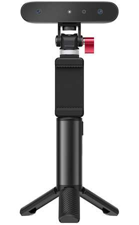 | Creality Ferret | 259 € (było 449) | link |
| Creality Ferret Pro | 349 € (było 489) | link | |
| Creality Otter | 628 € (było 969) | link | |
| Revopoint INSPIRE 2 | 405–468 € (było 579–669) | link | |
| 3DMakerpro Fox | 269 € (było 299) | link | |
| Creality Raptor | 959 € (było 1 599) | link |
Ferret SE 2 785 kr · Ferret 3 393 · Ferret Pro 4 245 · Raptor 10 707 · INSPIRE 2 6 110 · POP 4 8 583 · Mini 2 9 091–10 310 · Miraco Pro 25 043 · Trackit 53 085 → kategoria
Einstar EZ GO 13 735 kr · Einstar 2 13 188 · Rockit 19 788 · Vega 21 987 — kategoria. AESUB white 400 ml 152,50 kr (rea), blue 352,50 — link 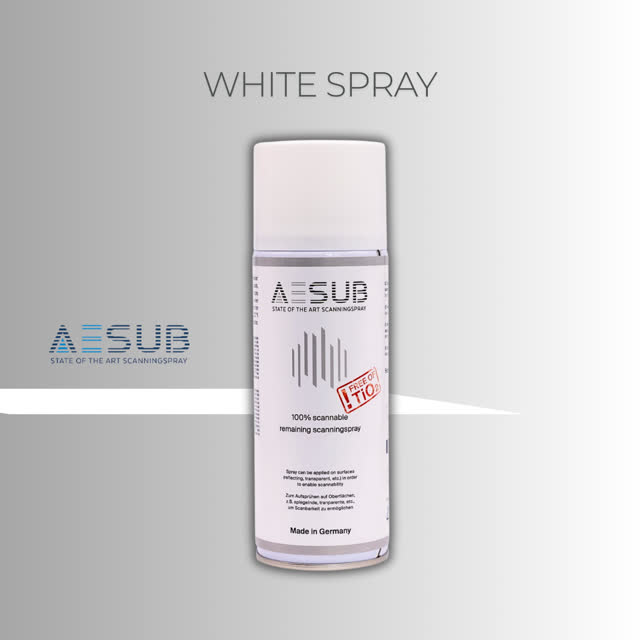
3DJake: brak skanerów (tylko „bq”). raseter.com: nie istnieje (NXDOMAIN).
| Model | List | Promo | Rabat |
|---|---|---|---|
| Creality Ferret Pro | $449 | $359 (≈3 770 kr) | −$90 |
| Creality Otter | $899 | $674 (≈7 080 kr) | −$225 |
| Creality Otter Lite | $759 | $569 (≈5 975 kr) | −$190 |
| Creality Raptor | $1 499 | $824 (≈8 650 kr) | −$675 |
| 3DMakerpro Moose | $599 | $419 (≈4 400 kr) | −$180 |
| 3DMakerpro Moose Lite | $413 | $239+ (≈2 510+ kr) | −$174 |
| Revopoint POP 3 Plus | 698 € | 593 € (≈6 700 kr) | −105 € |
| Revopoint MINI 2 | 929 € | 743 € (≈8 400 kr) | −186 € |
| Einstar 2 | — | −600 € promo (site-wide) | BF |
Creality: store.creality.com (EU store: eu.store.creality.com) • Revopoint: revopoint3d.com (free ship 3–5 dni) • 3DMakerpro: store.3dmakerpro.com (DE warehouse, free >140 €) • Shining 3D: eu.einstar.com. Gwarancje: Creality 12 mies., Revopoint/3DMakerpro/Shining ~12 mies.
| Model | Cena | Gdzie | Dodane | ||
|---|---|---|---|---|---|
| Shining 3D Einstar (gen1) | 4 500 kr | Blocket, Nödinge | 11-21 | link | ✅ |
| Creality CR-Scan 01 (poprz. Ferret-generation) | 2 650 kr | Blocket, Västerås | 11-14 | link | ✅ |
| Creality Ferret Pro | 2 900 kr | FB MP, Västerhaninge | akt. | link | ✅ |
| Creality Ferret Pro | 2 900–3 000 kr | Tradera ×2 (BIN/aukcja) | akt. | link | ✅ |
| Creality Ferret Pro | 3 199 kr | Blocket, Saltsjöbaden | 09-06 (stare) | link | ⚠️ |
| Revopoint Mini 2 Advanced | 5 000 kr | Blocket, Löddeköpinge | 11-11 | link | ✅ |
| Revopoint POP 4 | 7 100 kr | Blocket, Örebro | 11-14 | link | ✅ |
| Revopoint Miraco Pro 32GB | 12 000 kr | FB MP, Sjödalen | akt. | link | ✅ |
| Revopoint Miraco Plus | 18 900 kr | Blocket, Vällingby | 11-14 | link | ✅ |
| Model | Cena | Platforma | Uwagi | ||
|---|---|---|---|---|---|
| Creality Ferret Pro (używany) | 122 € ≈ 1 380 kr | eBay.de | +ship ~15–25 € | link | ⚠️ |
| Revopoint POP 3 gen1 (używany) | 121–199 € ≈ 1 370–2 250 kr | eBay/Kleinanzeigen | +ship | link | ⚠️ |
| Creality Otter Lite (używany) | 427 € ≈ 4 825 kr | eBay.de | +ship | link | ⚠️ |
| Shining 3D Einstar gen1 (używany) | 333–413 € ≈ 3 760–4 670 kr | Kleinanzeigen/eBay | KB 333 € VB | link | ⚠️ |
| Creality Ferret Pro ×4 (używane) | 218–285 € | eBay.de | różne zestawy | link | ⚠️ |
| Einstar VEGA (używana) | 850 € VB / 1 366 € | Kleinanzeigen/eBay | standalone | link | ⚠️ |
Ship DE→SE zwykle 15–25 €; kupując używkę weryfikuj kompletność (kalibracyjna tablica, markery, kable) — Pytaj sprzedawcę.
Architektura: main (GLM synteza) + 7 scraper-subagentów (DeepSeek V4.1 Flash): ali/allegro/amazon/eu-shops/ebay/reviews/official + lokalne skrypty Blocket/Tradera/FB. Destylaty: memory/research/skaner-3d-2026-11-23/raw/*.md (10 plików, ~1600 linii, ~680 URL-i).
Recenzje: 3DTechValley (Otter) • Lidar News (Moose) • TheTechnologyMan (Moose, kaliber) • 3DTechValley (Ferret Pro 7,5/10) • 3DWithUs • TechWalls (Seal) • Reddit (Seal: „too many flaws”) • Galaxus (Otter) • Making for Motorsport (Otter, panele aut) • MfM (Einstar 520K) • 3DMag (INSPIRE 2 vs POP 3) • 3DSourced (POP 3)
Self-audit: TL;DR na górze ✅ • dark mode ✅ • miniatury lokalne ✅ (22 załadowanych) • każdy price z linkiem ✅ • 2+ języki ✅ • koszty ukryte ✅ • coverage: wszystkie źródła z briefu ✅ • „w trakcie” sekcje: brak ✅
Wygenerowano 2026-11-23 14:49 • Poprzedni research skanerów: czerwiec 2026 (wtedy Ferret SE $269 = najtańszy sensowny; BF 2026 zbił do ~2 250 kr). ⬆️